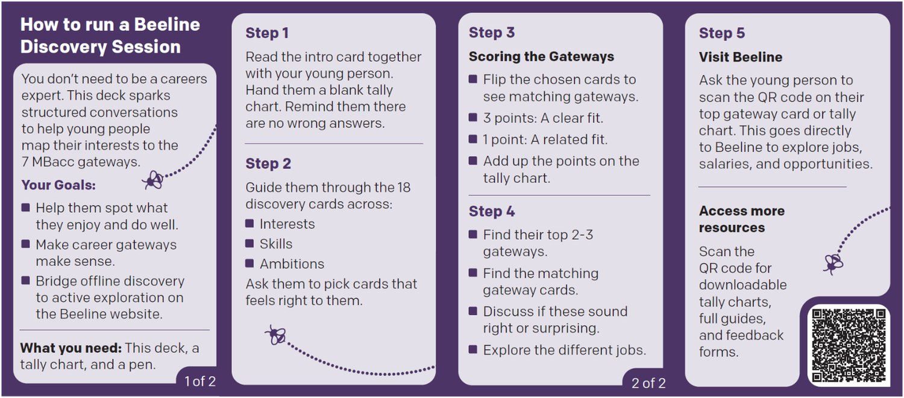
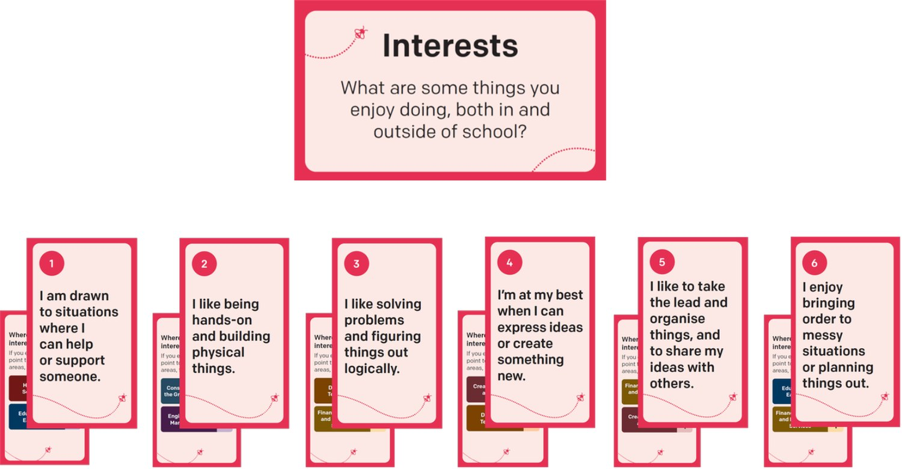
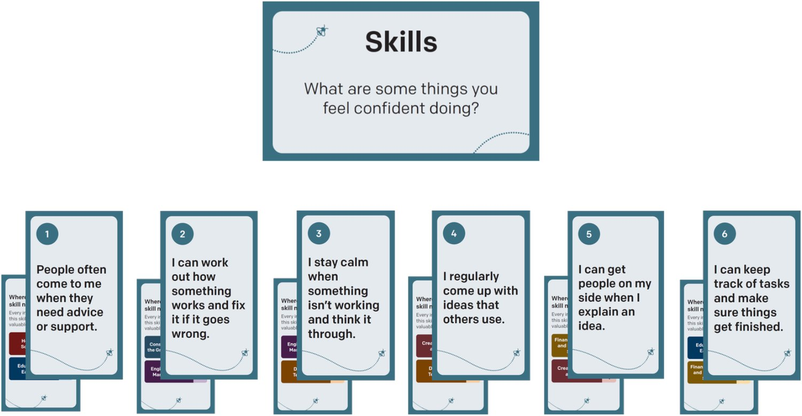
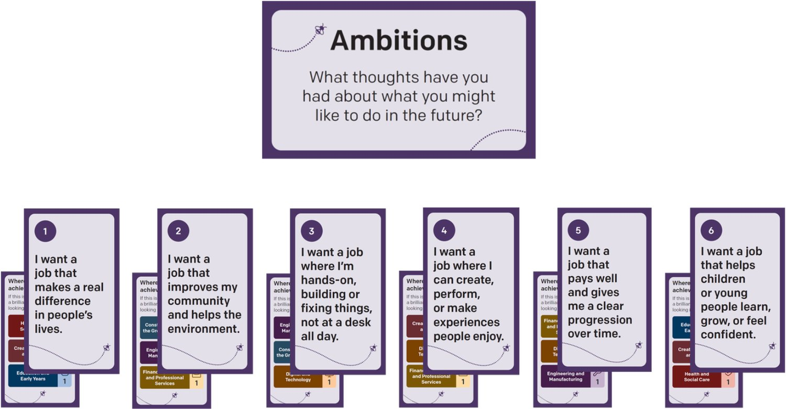
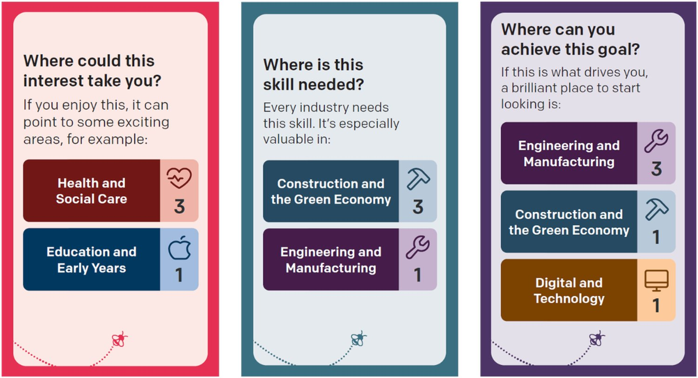
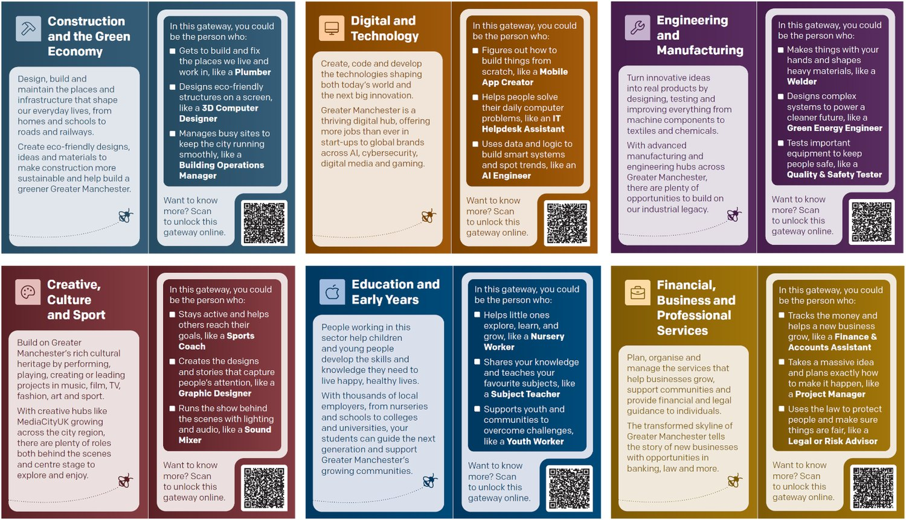
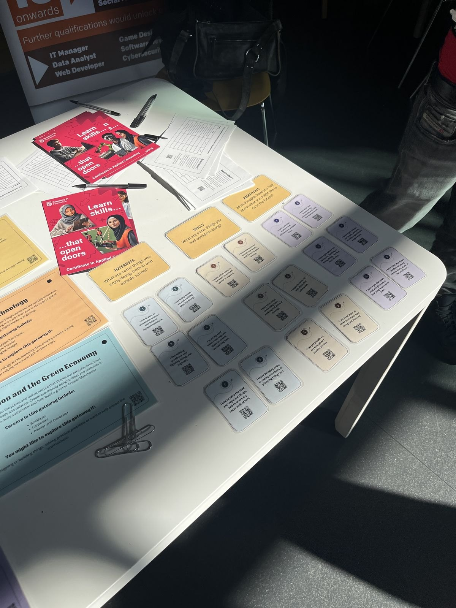
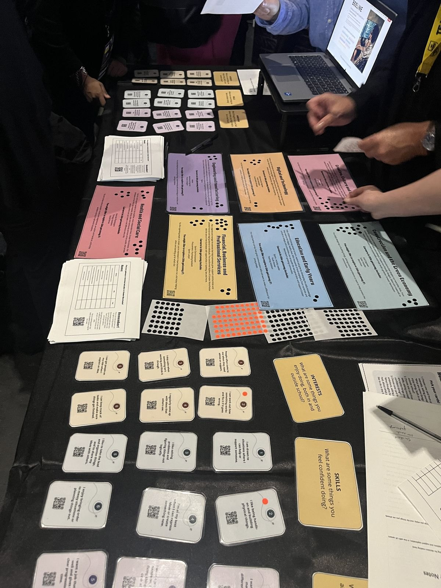

SIDE QUEST · THE OFFLINE CARD TOOLKIT
Beeline Unplugged
A deck of cards that runs the Beeline?BEELINEThe Greater Manchester service that helps young people up to 25 explore careers and find a next step. discovery logic without a screen. What is in the pack, what six settings of field testing showed, and how it was designed to cost less.
CHARACTER SHEETMANCHESTER · FEBRUARY – JULY 2026
CLASSProgramme Manager, Youth Employment & Opportunity Digital Services
QUESTI designed the activity and the scoring model, ran the field testing and the design assurance?DESIGN ASSURANCECollecting feedback from partners and young people in one log, so each point leads to a fix, a research question or a decision. rounds, and briefed and worked with a commissioned creative agency through artwork and production. I wrote the business case and the board decision paper, and set the measurement approach.
TEAMThe wider digital team, the wider YEO team, a commissioned creative agency, and facilitators across six events.
WHAT’S IN THE PACK
The pack, and why it was printed
Two to three minutes with one young person, or a whole class with one adult. Framed throughout as exploration: no right answers, nothing closed off, and no narrowing at 14.
×18Prompt cardsSix Interests, six Skills, six Ambitions, with the scoring printed on the back.
×7Gateway cardsJobs a 14-year-old can picture, and a QR code into that gateway online.
×1Tally chartFilled in by hand and taken home, with a QR code on it.
×2Guide cardsOpens with “You don’t need to be a careers expert”.
SCORINGCLEAR FIT = 3 PTSRELATED = 1 PTMAX 2 GATEWAYS SHARE A SCORE






FIELD TESTING · SIX SETTINGS, FEBRUARY – MAY 2026
Crowd and noiseA quiet cornerYounger learnersOlder learnersFamiliesA room with employers in it
AT THE LARGEST EVENT, SAME DAYS
UNPLUGGED≈290
DIGITAL≈140
Young people reached. The deck was on a stand in a hall; the website was there for anyone who wanted it.
EVERY GATEWAY GOT USED · 7/7
FINANCE & PROFESSIONAL≈57
CONSTRUCTION & GREEN≈52
CREATIVE, CULTURE, SPORT≈42
HEALTH & SOCIAL CARE≈40
EDUCATION & EARLY YEARS≈37
ENGINEERING & MANUF.≈32
DIGITAL & TECHNOLOGY≈31


OFFLINE AND ONLINE
Two shapes of the same journey
1 · ARRIVALOffline An adult sets it up.Online They arrive alone.
2 · ACTIVE DISCOVERYOffline Cards, tally and panels, all live at once.Online One question at a time.
3 · THE REVEALOffline A surprising score becomes a conversation.Online It lands on a screen with nobody there.
4 · THE BRIDGEOffline A code scanned later, often at home.Online The next page is one tap away.
5 · COMING BACKOffline Needs the pack, and usually the adult.Online Free to return, any hour.
ROUGH WORK · THE BLUEPRINT BEHIND THISFLIP TO THE ROUGH WORK ▸

COST
Designing it to cost less
Public money, so the cheapest version that still worked was part of the design. Four things brought the cost per young person down.
Bulk, not kitsEvery component in one print run, kits assembled in-house.
Four configurationsEach sized to where it goes, from a summit giveaway to a school kit.
One deck, many young peopleA class of thirty needs one deck and thirty printed sheets.
A v1, not the full orderA smaller first batch with tracked codes, then a v2 once the friction is known.